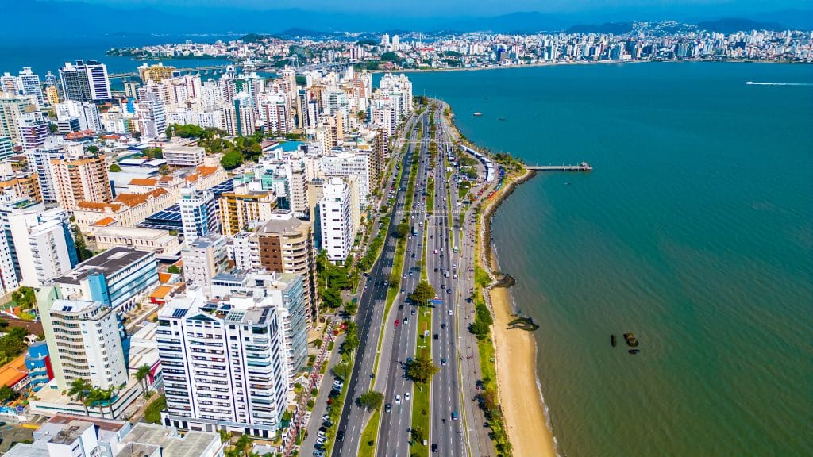

O Santa Catarina é um estado da região Sul do Brasil, conhecido por suas belas praias, cidades organizadas e forte influência europeia. Sua capital é Florianópolis, famosa pelas praias e qualidade de vida. O estado possui economia forte na indústria, agricultura e turismo, além de tradições culturais marcadas pela imigração alemã e italiana.
